The Definition of the Derivative#
Discussion & Definitions#
The Derivative is solution to the tangent problem, which is at the heart of Differential Calculus. If you have not read through the Tangent Problem in either the Introduction or Differential Calculus you should do so before continuing. As a quick recap, the goal is to find the slope of the tangent line to a curve at a point on the curve. Specifically, we have a function \(f(x)\), and a point \((a, f(a))\) on the curve. Since we do not have enough information to find the slope of the tangent line we choose a value \(x \neq a\), construct a secant line through \((a, f(a))\) and \((x, f(x))\) and calculate its slope,
This is an approximation to the slop of the tangent line. To get better approximations we take values of x closer and closer to a. That is, we take the limit as \(x \to a\).
and this is how we define the slope of the tangent line to a function. An equivalent formulation that is sometimes easier to calculate is if we let \(h = x-a\) then \(x = a + h\) and letting \(x \to a\) is the same thing as letting \(h \to 0\), our formula becomes,
At this point we simply define these limits (if they exist) as the derivative of the function at a. Formally,
Definition: The Derivative
Let \(f(x)\) be a function that is defined on an open interval containing the point a. We define the derivative of \(f(x)\) at a by
If this limit exists.
Equivalently, if we let \(h = x-a\), this implies that \(x = a + h\). Furthermore, this gives \(x \to a\) is equivalent to \(h \to 0\). Substituting this into our definition above we get the alternative formulation,
If this limit exists.
Definition: The Difference Quotient
The two expressions
are called the difference quotient.
Note
A quick note before going into the examples, the derivative of a function is easier to calculate using derivative formulas than using limits. We will investigate these methods in subsequent sections. Also, each of these software packages has a derivative function built into it and there is usually (but not always) no need to take the derivative using the definition when using a computer algebra system. We will look at these quicker methods in subsequent sections as well. The layout of these tutorials is to match, as closely as possible, the layout of a STEM introductory Calculus class at the college level. Each of the software packages we are using incorporates a computer algebra system, so they are all capable of find the derivative by definition. On the other hand, the packages we are using make different assumptions about the users and have different goals to their functionality. GeoGebra makes finding the derivative of a function very easy but doing it by definition is very cumbersome. For this reason we will only use CLAE and Maxima for this set of examples.
Example: \(f(x) = x^{3} - 3 x^{2} + x + 3\)#
For this example we will take the function \(f(x) = x^{3} - 3 x^{2} + x + 3\) and find both the slope of the tangent line and the equation of the tangent line to the function at \(x = 3\).
CLAE#
Input and graph the function \(f(x) = x^{3} - 3 x^{2} + x + 3\). Adjust the graph so that the curve looks nice and that \(x = 3\) is visible on the x-axis.
f(x):=x^3-3*x^2+x+3
Create the difference quotient with \(a = 3\) using the following syntax,
(f(3+h)-f(3))/h
you should get
Note that CLAE automatically substituted the \(3+h\) into the function and did some simplification. Now take the limit with Calculus > Limit variable is h, limit point is 0, and direction is Two Sided. The result should be 10.
To find the tangent line we use point-slope form \(y = m(x-a) + f(a)\), so input,
10*(x-3) + f(3)
The result is \(10 x - 24\). Graph this along with the curve,
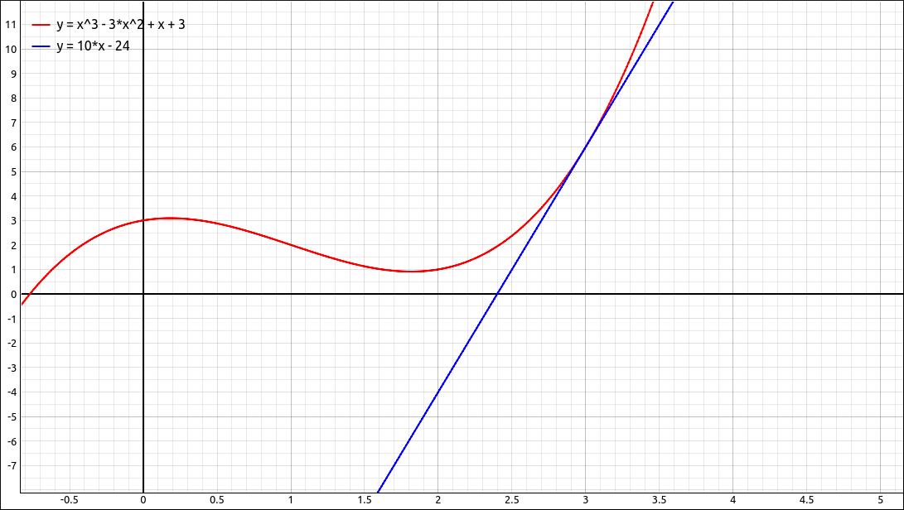
\(f(x) = x^{3} - 3 x^{2} + x + 3\) and Tangent Line#
Maxima#
Input and graph the function \(f(x) = x^{3} - 3 x^{2} + x + 3\). Adjust the graph so that the curve looks nice and that \(x = 3\) is visible on the x-axis.
f(x):=x^3-3*x^2+x+3
Create the difference quotient with \(a = 3\) using the following syntax,
(f(3+h)-f(3))/h
you should get
Note that Maxima automatically substituted the \(3+h\) into the function and did some simplification. Now take the limit, we will assume that the designation of the difference quotient was %o2, use
limit(%o2, h, 0);
The result should be 10.
To find the tangent line we use point-slope form \(y = m(x-a) + f(a)\), so input,
10*(x-3) + f(3)
Maxima evaluated \(f(3)\) but did not simplify the expression. To simplify the expression select Simplify > Simplify equations > Try to guess which form is simple. The result is \(10 x - 24\).
Graph this along with the curve,
wxplot2d([f(x), 10*x-24], [x,-1,5])
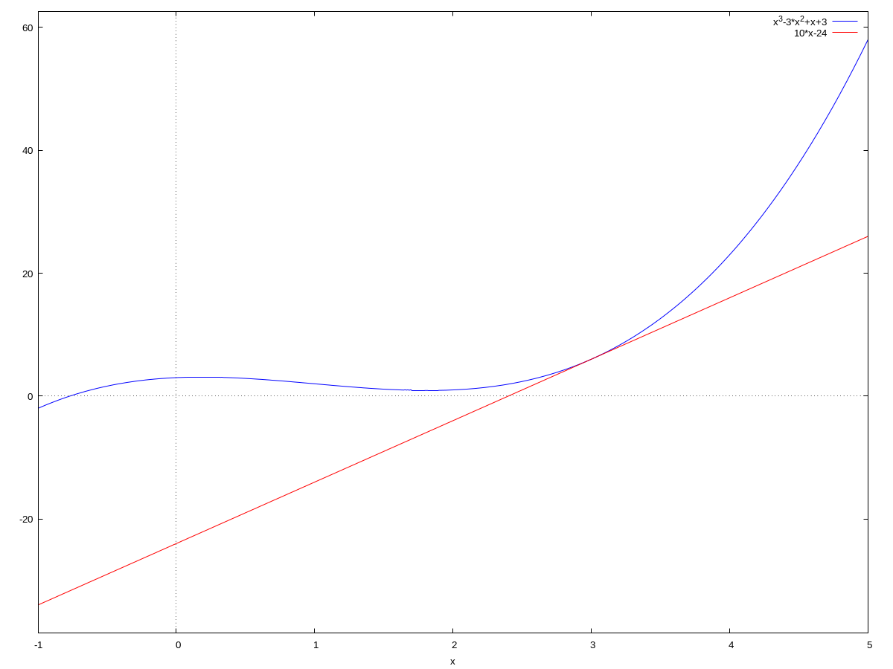
\(f(x) = x^{3} - 3 x^{2} + x + 3\) and Tangent Line#
Note
If you look at the command that Maxima choose it was ratsimp which is used to simplify rational expressions. You could have just as easily run the command,
ratsimp(%o4);
assuming that %o4 was the designation for the tangent line.
Example: \(f(x) = \frac{1}{x}\)#
For this example we will take the function \(f(x) = \frac{1}{x}\) and find both the slope of the tangent line and the equation of the tangent line to the function at \(x = 2\).
CLAE#
Input and graph the function \(f(x) = \frac{1}{x}\). Adjust the graph so that the curve looks nice and that \(x = 2\) is visible on the x-axis.
f(x):=1/x
Create the difference quotient with \(a = 2\) using the following syntax,
(f(2+h)-f(2))/h
you should get
Note that CLAE automatically substituted the \(2+h\) into the function and did some simplification. Now take the limit with Calculus > Limit variable is h, limit point is 0, and direction is Two Sided. The result should be \(-1/4\).
To find the tangent line we use point-slope form \(y = m(x-a) + f(a)\), so input,
-1/4*(x-2) + f(2)
The result is \(1 - \frac{x}{4}\). Graph this along with the curve,
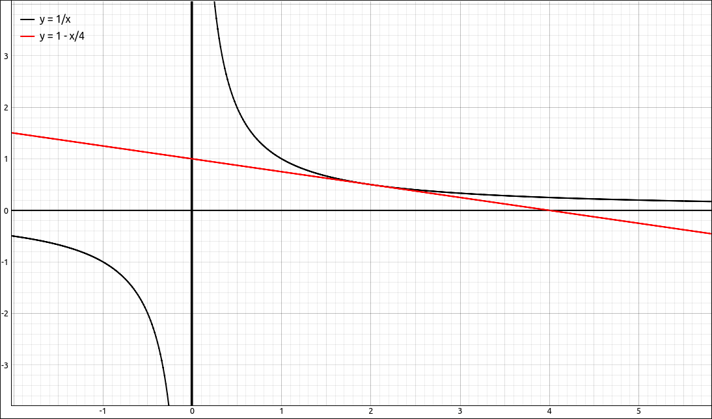
\(f(x) = \frac{1}{x}\) and Tangent Line#
Maxima#
Input and graph the function \(f(x) = \frac{1}{x}\). Adjust the graph so that the curve looks nice and that \(x = 2\) is visible on the x-axis.
f(x):=1/x
Create the difference quotient with \(a = 2\) using the following syntax,
(f(2+h)-f(2))/h
you should get
Note that Maxima automatically substituted the \(2+h\) into the function and did some simplification. Now take the limit, we will assume that the designation of the difference quotient was %o2, use
limit(%o2, h, 0);
The result should be \(-1/4\).
To find the tangent line we use point-slope form \(y = m(x-a) + f(a)\), so input,
-1/4*(x-2) + f(2)
Maxima evaluated \(f(2)\) but did not simplify the expression. To simplify the expression select Simplify > Simplify equations > Try to guess which form is simple. The result is \(-\frac{x-4}{4}\).
Graph this along with the curve,
wxplot2d([f(x), -(x-4)/4], [x,-1,5], [y,-10,10])
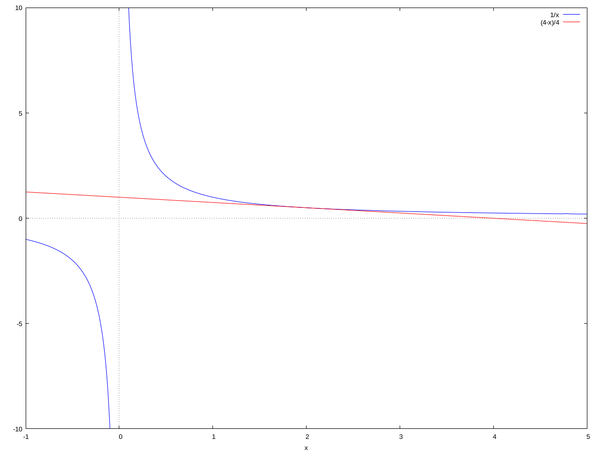
\(f(x) = \frac{1}{x}\) and Tangent Line#
Example: \(f(x) = \sin(x)\)#
For this example we will take the function \(f(x) = \sin(x)\) and find both the slope of the tangent line and the equation of the tangent line to the function at \(x = \pi/12\).
CLAE#
Input and graph the function \(f(x) = \sin(x)\). Adjust the graph so that the curve looks nice and that \(x = \pi/12 \approx 0.261799387799149\) is visible on the x-axis.
f(x):=sin(x)
Create the difference quotient with \(a = \pi/12\) using the following syntax,
(f(pi/12+h)-f(pi/12))/h
you should get
Now take the limit with Calculus > Limit variable is h, limit point is 0, and direction is Two Sided. The result should be \(\frac{\sqrt{2}}{4} + \frac{\sqrt{6}}{4}\).
To find the tangent line we use point-slope form \(y = m(x-a) + f(a)\). Since the expression for the slope is a little long we will use the shorthand notation for including a previous result into a new input. Assuming that the slope designation was R3, input the following,
R3*(x-pi/12) + f(pi/12)
The result is \(\left(\frac{\sqrt{2}}{4} + \frac{\sqrt{6}}{4}\right) \left(x - \frac{\pi}{12}\right) - \frac{\sqrt{2}}{4} + \frac{\sqrt{6}}{4}\). Graph this along with the curve,
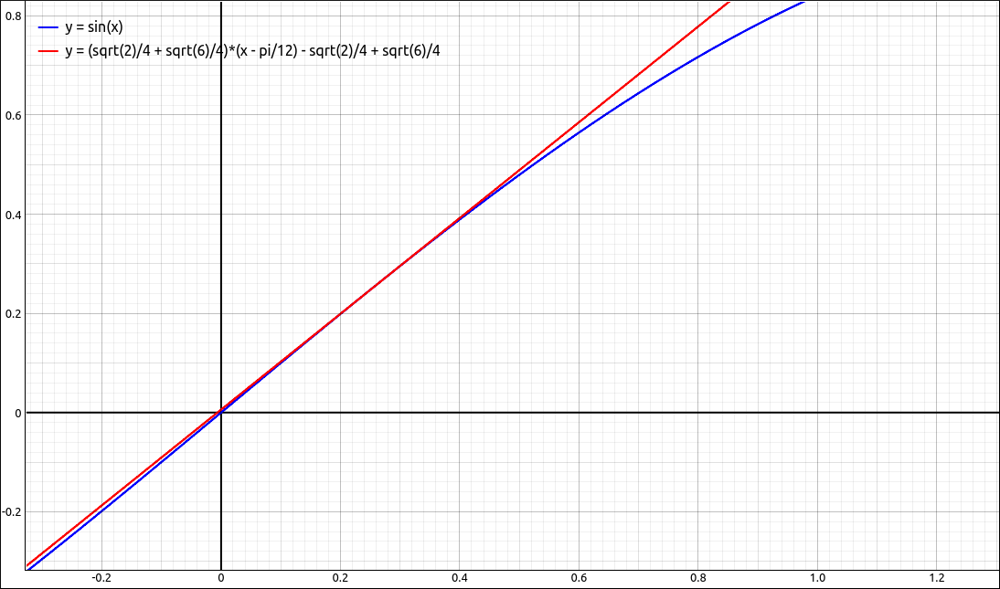
\(f(x) = \sin(x)\) and Tangent Line#
Maxima#
Input and graph the function \(f(x) = \sin(x)\). Adjust the graph so that the curve looks nice and that \(x = \pi/12 \approx 0.261799387799149\) is visible on the x-axis.
f(x):=sin(x)
Create the difference quotient with \(a = \pi/12\) using the following syntax,
(f(%pi/12+h)-f(%pi/12))/h
you should get
Now take the limit, assuming the difference quotient is in %o2,
limit(%o2, h, 0)
The result should be \(\cos{\left( \frac{{\pi} }{12}\right) }\).
To find the tangent line we use point-slope form \(y = m(x-a) + f(a)\). Since the expression for the slope is a little long we will use the shorthand notation for including a previous result into a new input. Assuming that the slope designation was %o3, input the following,
%o3*(x-%pi/12) + f(%pi/12)
The result is \(\cos{\left( \frac{{\pi} }{12}\right) } \left( x-\frac{{\pi} }{12}\right) +\sin{\left( \frac{{\pi} }{12}\right) }\). Graph this along with the curve, assuming %o4 is the tangent line,
wxplot2d([f(x), %o4], [x,-0.3,1.3])
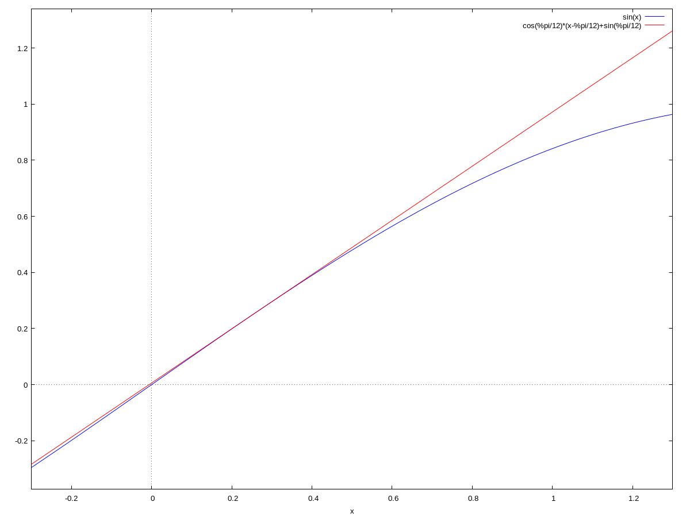
\(f(x) = \sin(x)\) and Tangent Line#
Example: \(f(x) = \sqrt{x}\)#
For this example we will take the function \(f(x) = \sqrt{x}\) and find both the slope of the tangent line and the equation of the tangent line to the function at \(x = 2\).
CLAE#
Input and graph the function \(f(x) = \sqrt{x}\). Adjust the graph so that the curve looks nice and that \(x = 2\) is visible on the x-axis.
f(x):=sqrt(x)
Create the difference quotient with \(a = 2\) using the following syntax,
(f(2+h)-f(2))/h
you should get
Now take the limit with Calculus > Limit variable is h, limit point is 0, and direction is Two Sided. The result should be \(\frac{\sqrt{2}}{4}\).
To find the tangent line we use point-slope form \(y = m(x-a) + f(a)\). Since the expression for the slope is a little long we will use the shorthand notation for including a previous result into a new input. Assuming that the slope designation was R3, input the following,
R3*(x-2) + f(2)
The result is \(\frac{\sqrt{2} \left(x - 2\right)}{4} + \sqrt{2}\). Graph this along with the curve,
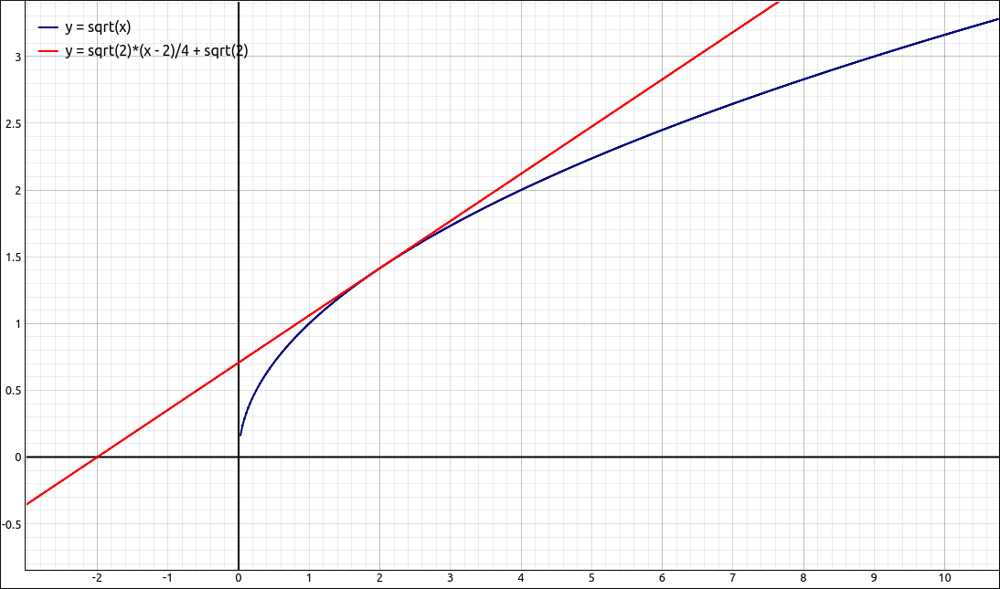
\(f(x) = \sqrt{x}\) and Tangent Line#
Maxima#
Input and graph the function \(f(x) = \sqrt{x}\). Adjust the graph so that the curve looks nice and that \(x = 2\) is visible on the x-axis.
f(x):=sqrt(x)
Create the difference quotient with \(a = 2\) using the following syntax,
(f(2+h)-f(2))/h
you should get
Now take the limit, assuming the difference quotient is in %o2,
limit(%o2, h, 0);
The result should be \(\frac{1}{{{2}^{\frac{3}{2}}}}\).
To find the tangent line we use point-slope form \(y = m(x-a) + f(a)\). Since the expression for the slope is a little long we will use the shorthand notation for including a previous result into a new input. Assuming that the slope designation was %o3, input the following,
%o3*(x-2) + f(2)
The result is \(\frac{x-2}{{{2}^{\frac{3}{2}}}}+\sqrt{2}\). Graph this along with the curve, assuming that the tangent line designation was %o4, input the following,
wxplot2d([f(x), %o4], [x,-1,5])
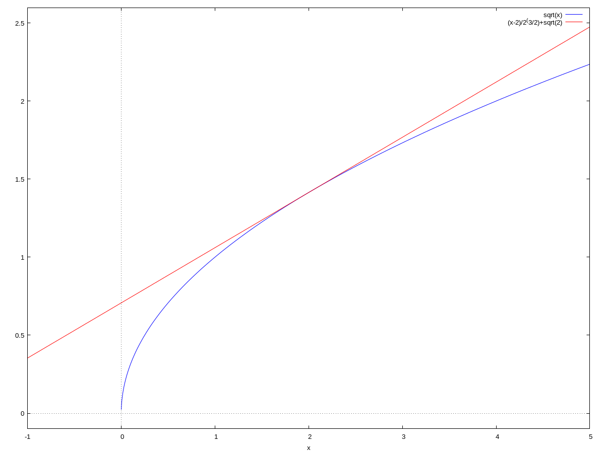
\(f(x) = \sqrt{x}\) and Tangent Line#
Example: \(f(x) = x^{2/3}\) at \(x = 2\)#
For this example we will take the function \(f(x) = x^{2/3}\) and find both the slope of the tangent line and the equation of the tangent line to the function at \(x = 2\).
CLAE#
Input and graph the function \(f(x) = x^{2/3}\). A little caution needs to be takes here, if we input and graph this as,
f(x):=x^(2/3)
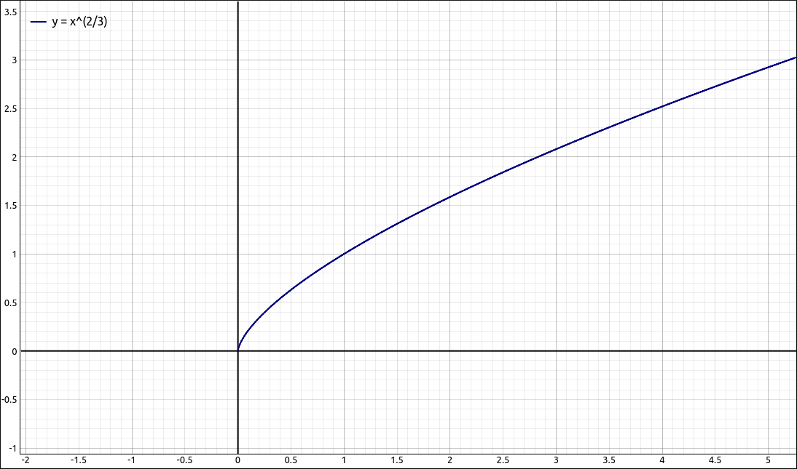
\(f(x) = x^{2/3}\)#
which we know is only half the graph. As an alternative you can use the following, which will produce the entire graph.
f(x):=(x^2)^(1/3)
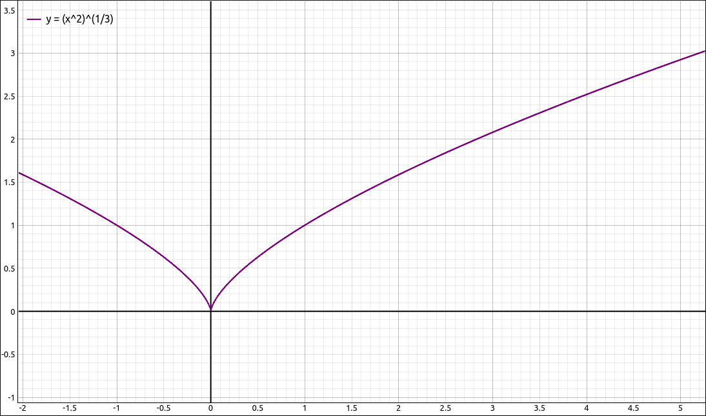
\(f(x) = x^{2/3}\)#
Adjust the graph so that the curve looks nice and that \(x = 2\) is visible on the x-axis.
Create the difference quotient with \(a = 2\) using the following syntax,
(f(2+h)-f(2))/h
you should get
Now take the limit with Calculus > Limit variable is h, limit point is 0, and direction is Two Sided. The result should be \(\frac{2^{\frac{2}{3}}}{3}\).
To find the tangent line we use point-slope form \(y = m(x-a) + f(a)\). Since the expression for the slope is a little long we will use the shorthand notation for including a previous result into a new input. Assuming that the slope designation was R3, input the following,
R3*(x-2) + f(2)
The result is \(\frac{2^{\frac{2}{3}} \left(x - 2\right)}{3} + 2^{\frac{2}{3}}\). Graph this along with the curve,
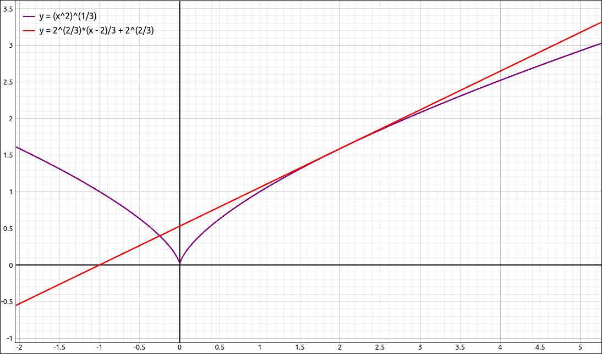
\(f(x) = x^{2/3}\) and Tangent Line#
Maxima#
Input and graph the function \(f(x) = x^{2/3}\),
f(x):=x^(2/3)
Adjust the graph so that the curve looks nice and that \(x = 2\) is visible on the x-axis. Create the difference quotient with \(a = 2\) using the following syntax,
(f(2+h)-f(2))/h
you should get
Now take the limit, assuming the difference quotient is in %o2,
limit(%o2, h, 0)
The result should be \(\frac{{{2}^{\frac{2}{3}}}}{3}\).
To find the tangent line we use point-slope form \(y = m(x-a) + f(a)\). Since the expression for the slope is a little long we will use the shorthand notation for including a previous result into a new input. Assuming that the slope designation was %o3, input the following,
%o3*(x-2) + f(2)
The result is \(\frac{{{2}^{\frac{2}{3}}} \left( x-2\right) }{3}+{{2}^{\frac{2}{3}}}\). Graph this along with the curve, assuming that the tangent line is in %o4,
wxplot2d([f(x), %o4], [x,-1,5])
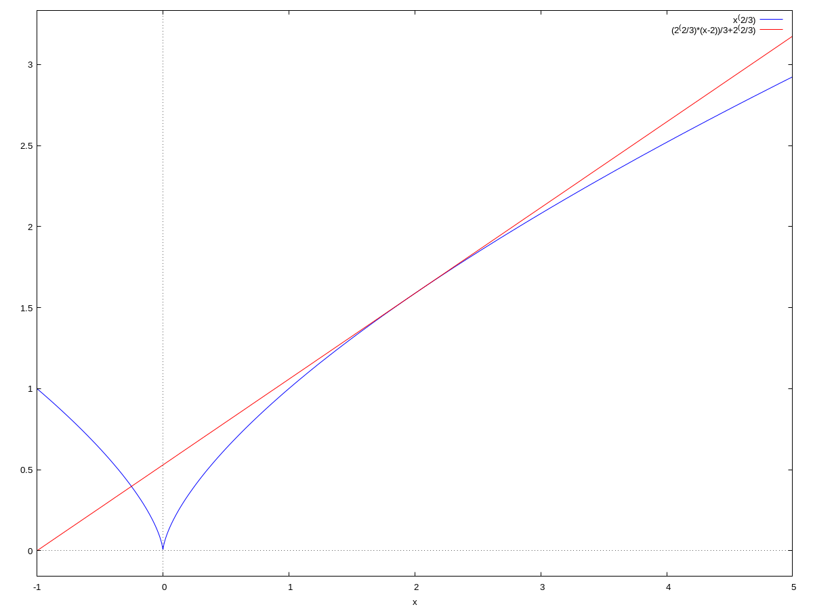
\(f(x) = x^{2/3}\) and Tangent Line#
Example: \(f(x) = x^{2/3}\) at \(x = 0\)#
For this example we will investigate the function \(f(x) = x^{2/3}\) at \(x = 0\). The graph of the function is below.
\(f(x) = x^{2/3}\)#
Notice that at \(x = 0\) the graph has a sharp corner or cusp. Whenever this happens the derivative will not exist at that point. This example will show why that is the case.
CLAE#
Input and graph the function \(f(x) = x^{2/3}\).
f(x):=x^(2/3)
Create the difference quotient with \(a = 0\) using the following syntax,
(f(h)-f(0))/h
you should get
Now take the limit with Calculus > Limit variable is h, limit point is 0, and direction is Two Sided. The result should be zoo, our complex infinity which says that the limit does not exist. If we go further and take the one-sided limits we get
telling us that the limits are infinite, in either case the limit of the difference quotient does not exist and hence we do not have a derivative at \(x = 0\).
Maxima#
Input and graph the function \(f(x) = x^{2/3}\),
f(x):=x^(2/3)
Create the difference quotient with \(a = 0\) using the following syntax,
(f(0+h)-f(0))/h
you should get
Now take the limit, assuming the difference quotient is in %o2,
limit(%o2, h, 0)
The result should be infinity. If we take the one-sided limits we get \(-\infty\) and \(\infty\). In either case the limit of the difference quotient does not exist and hence we do not have a derivative at \(x = 0\).
Example: \(f(x) = x \sin\left(\frac{1}{x}\right)\)#
Let’s look at a more complicated function, \(f(x) = x \sin\left(\frac{1}{x}\right)\).
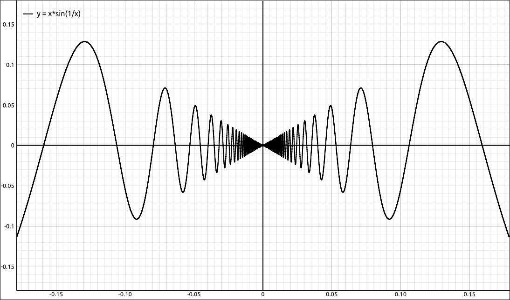
\(f(x) = x \sin\left(\frac{1}{x}\right)\)#
This function is not continuous at \(x = 0\) since \(f(0)\) does not exist. On the other hand, the discontinuity is removable and we will remove it by defining \(f(0) = 0\). Specifically,
We will show in the procedures below that this function, although continuous at \(x = 0\) still does not have a derivative at \(x = 0\). In this case neither of the right or left hand limits of the difference quotient exist. This gives us another case where a derivative does not exist and it is not just a cusp in the graph.
CLAE#
Input the function, we really only need the non-zero portion.
f(x):=x*sin(1/x)
Create the difference quotient, since \(a = 0\) and we defined \(f(0) = 0\), the difference quotient reduces to,
f(h)/h
The result is \(\sin{\left(\frac{1}{h} \right)}\). We already know from the limit examples that
Does not exist.
Maxima#
Input the function, we really only need the non-zero portion.
f(x):=x*sin(1/x)
Create the difference quotient, since \(a = 0\) and we defined \(f(0) = 0\), the difference quotient reduces to,
f(h)/h
The result is \(\sin{\left(\frac{1}{h} \right)}\). We already know from the limit examples that
Does not exist.